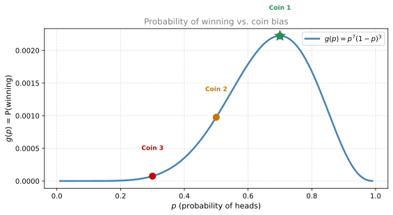
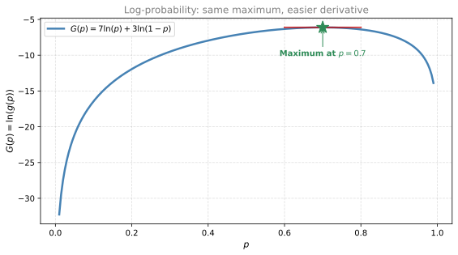
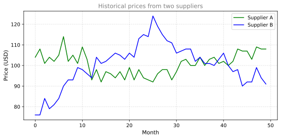
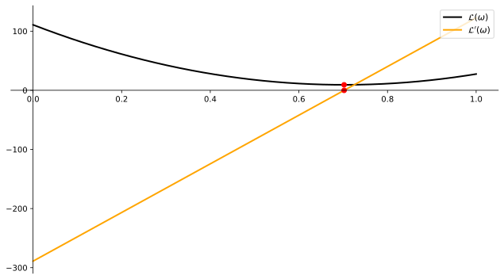

Log Loss
calculus
In the previous page you saw that minimizing the squared error leads to the mean. Now there’s another important loss function in machine learning called the log loss. It shows up in classification problems, and we can derive it from a simple coin flip game.
Coin Flip Game
Here’s the setup. You toss a coin 10 times. If the results are exactly seven heads followed by three tails, you win. Otherwise, you lose. The twist: you get to pick the coin, and it can be biased.
You have three coins to choose from:
| Coin | P(heads) | P(tails) |
|---|---|---|
| Coin 1 | 0.7 | 0.3 |
| Coin 2 | 0.5 | 0.5 |
| Coin 3 | 0.3 | 0.7 |
Which coin should you pick to maximize your chance of winning?
Calculating the Probabilities
Since each flip is independent, the probability of getting 7 heads then 3 tails is:
\[ P(\text{win}) = P(\text{heads})^7 \times P(\text{tails})^3 \]
For each coin:
- Coin 1: \(0.7^7 \times 0.3^3 = 0.00222\)
- Coin 2: \(0.5^7 \times 0.5^3 = 0.5^{10} = 0.00098\)
- Coin 3: \(0.3^7 \times 0.7^3 = 0.00007\)
Coin 1 gives the highest probability. But is it the best possible coin? What if we could choose any bias \(p\)?
Finding the Optimal Coin with Calculus
Let \(p\) be the probability of heads (so \(1-p\) is the probability of tails). The probability of winning is:
\[ g(p) = \underbrace{p^7}_{\text{7 heads}} \cdot \underbrace{(1-p)^3}_{\text{3 tails}} \]
To maximize \(g(p)\), take the derivative and set it to zero. Using the product rule:
\[ g'(p) = \underbrace{7p^6(1-p)^3}_{\text{derivative of } p^7 \text{ times } (1-p)^3} + \underbrace{p^7 \cdot 3(1-p)^2 \cdot (-1)}_{\text{chain rule on } (1-p)^3} \]
Factor out \(p^6(1-p)^2\):
\[ g'(p) = p^6(1-p)^2 \left[7(1-p) - 3p\right] = p^6(1-p)^2(7 - 10p) \]
Setting \(g'(p) = 0\) gives three candidates:
- \(p^6 = 0 \implies p = 0\) (no heads ever, useless)
- \((1-p)^2 = 0 \implies p = 1\) (no tails ever, useless)
- \(7 - 10p = 0 \implies p = 0.7\) ✓
So \(p = 0.7\) is optimal. Coin 1 was indeed the best possible coin.
Logarithm Trick
That product rule calculation was messy. There’s an easier way: instead of maximizing \(g(p)\), maximize \(\ln(g(p))\). Since \(\ln\) is an increasing function, the maximum of \(\ln(g)\) occurs at the same \(p\) as the maximum of \(g\).
\[ G(p) = \ln(g(p)) = \ln\left(p^7(1-p)^3\right) \]
Using logarithm properties (\(\ln(ab) = \ln a + \ln b\) and \(\ln(a^n) = n \ln a\)):
\[ G(p) = \underbrace{7\ln(p)}_{\text{from 7 heads}} + \underbrace{3\ln(1-p)}_{\text{from 3 tails}} \]
Now differentiate. Since \(\frac{d}{dp}\ln(p) = \frac{1}{p}\):
\[ G'(p) = \underbrace{\frac{7}{p}}_{\text{from } \ln(p)} + \underbrace{\frac{3}{1-p} \cdot (-1)}_{\text{chain rule on } \ln(1-p)} = \frac{7}{p} - \frac{3}{1-p} \]
Set \(G'(p) = 0\):
\[ \frac{7}{p} = \frac{3}{1-p} \]
Cross-multiply: \(7(1-p) = 3p\), so \(7 - 7p = 3p\), giving \(p = 0.7\).
Same answer, much simpler algebra. The logarithm converted the product into a sum and the exponents into coefficients.
Tip
Try it yourself: Plot 7*ln(p) + 3*ln(1-p) in the Function Grapher to see the maximum at \(p = 0.7\).

From Log-Probability to Log Loss
Notice that \(G(p) = \ln(g(p))\) is always negative (since \(g(p)\) is a probability between 0 and 1, and \(\ln\) of a number less than 1 is negative).
In machine learning, we prefer to work with positive numbers and minimize rather than maximize. So we define the log loss as:
\[ \text{Log Loss} = -G(p) = -\left[7\ln(p) + 3\ln(1-p)\right] \]
Maximizing the probability is the same as minimizing the log loss. This is exactly the loss function used in logistic regression and binary classification.
Note
The general pattern: If you observe \(m\) “successes” and \(n\) “failures” with a model that predicts probability \(p\), the log loss is: \[ \mathcal{L}(p) = -\left[m \ln(p) + n \ln(1-p)\right] \] Minimizing this gives \(p = \frac{m}{m+n}\), the observed frequency. This is maximum likelihood estimation.
Why the Logarithm Trick Works
The logarithm trick works for two reasons:
Products become sums: \(\ln(a \cdot b) = \ln(a) + \ln(b)\). Since probabilities of independent events multiply, their logs add. Sums are easier to differentiate than products.
Exponents become coefficients: \(\ln(p^7) = 7\ln(p)\). Repeated events become simple scalar multiples.
This pattern appears throughout machine learning. Whenever you see a product of probabilities (a likelihood function), taking the log converts it to a sum (the log-likelihood), which is much easier to optimize.
Why Not Just Use the Product Directly?
You might wonder: if we can use the product rule, why bother with logarithms? Two practical reasons:
1. Products of many terms are a nightmare to differentiate.
The product rule for two functions is manageable. But what about a product of 5 terms? The result explodes.
\[ \frac{df}{dp} \;\; 😫 \quad \Longrightarrow \quad \frac{d}{dp}\ln(f) \;\; 😊 \]
Consider this function:
\[ f(p) = p^6(1-p)^2(3-p)^9(p-4)^{13}(10-p)^{500} \]
Its derivative (by iterating the product rule) is this monster:
\[ \frac{df}{dp} = [6p^5](1-p)^2(3-p)^9(p-4)^{13}(10-p)^{500} \] \[ + \; p^6[2(1-p)](3-p)^9(p-4)^{13}(10-p)^{500}(-1) \] \[ + \; p^6(1-p)^2[9(3-p)^8](p-4)^{13}(10-p)^{500}(-1) \] \[ + \; p^6(1-p)^2(3-p)^9[13(p-4)^{12}](10-p)^{500} \] \[ + \; p^6(1-p)^2(3-p)^9(p-4)^{13}[500(10-p)^{499}](-1) \]
That’s something no one wants to work with. But if we take the logarithm:
\[ G(p) = 6\ln(p) + 2\ln(1-p) + 9\ln(3-p) + 13\ln(p-4) + 500\ln(10-p) \]
The derivative is simply:
\[ G'(p) = \frac{6}{p} - \frac{2}{1-p} - \frac{9}{3-p} + \frac{13}{p-4} - \frac{500}{10-p} \]
Clean and manageable, no matter how many factors or how large the exponents.
2. Products of small numbers underflow to zero on computers.
A probability that’s the product of 1,000 numbers between 0 and 1 could be something like \(10^{-300}\). Computers can’t represent numbers that small (they round to zero). But \(\ln(10^{-300}) = -690\), which is a perfectly normal number. Logarithms keep things in a numerically stable range.
Note
Rule of thumb: Anytime in machine learning you have a complicated product (especially of probabilities), think of using the logarithm. It simplifies derivatives and prevents numerical underflow.
Review Questions
1. In the coin flip game, why is \(p = 0\) not a valid solution even though it satisfies \(g'(p) = 0\)?
TipAnswer
If \(p = 0\), the coin always lands tails. You can never get heads, so you can never get 7 heads. The probability of winning is \(g(0) = 0^7 \cdot 1^3 = 0\). It’s a minimum, not a maximum.
2. Verify that for the general case of \(m\) heads and \(n\) tails, maximizing \(g(p) = p^m(1-p)^n\) gives \(p = \frac{m}{m+n}\).
TipAnswer
Take the log: \(G(p) = m\ln(p) + n\ln(1-p)\). Differentiate: \(G'(p) = \frac{m}{p} - \frac{n}{1-p} = 0\). Cross-multiply: \(m(1-p) = np\), so \(m - mp = np\), giving \(p(m+n) = m\), hence \(p = \frac{m}{m+n}\).
3. Why do we minimize the negative log-probability instead of maximizing the log-probability?
TipAnswer
Convention. Optimization frameworks and gradient descent are typically set up to minimize a loss function. Since \(\ln(g(p))\) is negative (because \(0 < g(p) < 1\)), taking the negative makes it positive. Minimizing \(-\ln(g)\) is mathematically identical to maximizing \(\ln(g)\), which is identical to maximizing \(g\) itself.
4. Let \(f(x)\) be a positive real function and \(g(x) = \ln f(x)\). Check all that apply.
\(\frac{df(x)}{dx} = \frac{dg(x)}{dx}\)
If \(x_{max}\) is a point where \(f(x_{max})\) is a local maximum, then \(g(x_{max})\) is also a local maximum.
If \(x_{max}\) is a point where \(f(x_{max})\) is a local maximum, then \(g(x_{max})\) is also a local minimum.
If \(f(x)\) is differentiable, then so is \(g(x)\).
TipAnswer
b and d are correct.
(a) is false. By the chain rule, \(g'(x) = \frac{f'(x)}{f(x)}\), not \(f'(x)\). The derivatives are different (they differ by a factor of \(\frac{1}{f(x)}\)).
(b) is true. Since \(\ln\) is a strictly increasing function, it preserves the ordering of values. If \(f(x_{max}) \geq f(x)\) for all nearby \(x\), then \(\ln(f(x_{max})) \geq \ln(f(x))\) as well. So a local maximum of \(f\) is also a local maximum of \(g\).
(c) is false. It’s a maximum, not a minimum (see (b)).
(d) is true. If \(f(x)\) is differentiable and positive, then \(g(x) = \ln(f(x))\) is differentiable by the chain rule: \(g'(x) = f'(x)/f(x)\). Since \(f(x) > 0\), the denominator is never zero.
5. Using the chain rule, the derivative of \(e^{-x}\) is:
\(e^{-x}\)
\(-e^{x}\)
\(-e^{-x}\)
\(e^{x}\)
TipAnswer
c. \(-e^{-x}\)
By the chain rule: let \(u = -x\), so \(\frac{d}{dx}e^u = e^u \cdot \frac{du}{dx} = e^{-x} \cdot (-1) = -e^{-x}\).
Lab: Cost Minimization
In this lab you’ll apply optimization to a real problem: finding the optimal split between two suppliers to minimize cost variance. You’ll use jax.grad to compute derivatives automatically and verify that the minimum occurs where the derivative equals zero.
The problem: Your company buys a product monthly from two suppliers A and B. The monthly cost is:
\[ f(\omega) = \underbrace{\omega \cdot p_A}_{\text{from A}} + \underbrace{(1-\omega) \cdot p_B}_{\text{from B}} \]
where \(\omega \in [0,1]\) is the fraction from supplier A. Based on historical prices, you want the \(\omega\) that gives the most stable cost (minimum variance):
\[ \mathcal{L}(\omega) = \frac{1}{k}\sum_{i=1}^{k}\left(f^i(\omega) - \overline{f(\omega)}\right)^2 \]
Load and Visualize the Data
Download the dataset: prices.csv
from jax import grad
import jax.numpy as jnp
import pandas as pd
import matplotlib.pyplot as plt
%config InlineBackend.figure_formats = ['svg']
# Load historical prices
df = pd.read_csv('../../media/prices.csv')
prices_A = jnp.array(df['price_supplier_a_dollars_per_item'].values, dtype=jnp.float32)
prices_B = jnp.array(df['price_supplier_b_dollars_per_item'].values, dtype=jnp.float32)
print(f"Supplier A: mean = {float(jnp.mean(prices_A)):.2f}")
print(f"Supplier B: mean = {float(jnp.mean(prices_B)):.2f}")Supplier A: mean = 100.80
Supplier B: mean = 100.00fig, ax = plt.subplots(figsize=(8, 4))
ax.plot(prices_A, 'g', label="Supplier A")
ax.plot(prices_B, 'b', label="Supplier B")
ax.set_xlabel('Month', fontsize=11)
ax.set_ylabel('Price (USD)', fontsize=11)
ax.set_title('Historical prices from two suppliers', fontsize=12, color='gray')
ax.legend(fontsize=10)
ax.grid(True, linestyle='--', alpha=0.4)
plt.tight_layout()
plt.show()
The prices fluctuate. Sometimes A is cheaper, sometimes B. The goal: find the split \(\omega\) that makes the blended cost as stable as possible.
Construct and Minimize \(\mathcal{L}(\omega)\)
def f_of_omega(omega, pA, pB):
"""Blended cost for a given omega."""
return pA * omega + pB * (1 - omega)
def L_of_omega(omega, pA, pB):
"""Variance of the blended cost (the loss function)."""
f = f_of_omega(omega, pA, pB)
return (1/len(f)) * jnp.sum((f - jnp.mean(f))**2)
# Evaluate L for many values of omega
N = 1001
omega_array = jnp.linspace(0, 1, N, endpoint=True)
L_array = jnp.array([L_of_omega(omega_array[i], prices_A, prices_B) for i in range(N)])
# Find the minimum
i_opt = int(L_array.argmin())
omega_opt = float(omega_array[i_opt])
L_opt = float(L_array[i_opt])
print(f"Minimum variance at omega = {omega_opt:.3f}")
print(f"L(omega_min) = {L_opt:.4f}")Minimum variance at omega = 0.702
L(omega_min) = 9.2497Verify with the Derivative
Now use jax.grad to compute \(\mathcal{L}'(\omega)\) and confirm it equals zero at the minimum:
# Compute derivative at each omega using jax.grad
dLdOmega_array = jnp.array([grad(L_of_omega)(omega_array[i], prices_A, prices_B) for i in range(N)])
# Find where derivative is closest to 0
i_opt_2 = int(jnp.abs(dLdOmega_array).argmin())
omega_opt_2 = float(omega_array[i_opt_2])
dL_opt_2 = float(dLdOmega_array[i_opt_2])
print(f"Derivative closest to 0 at omega = {omega_opt_2:.3f}")
print(f"L'(omega) = {dL_opt_2:.7f}")Derivative closest to 0 at omega = 0.702
L'(omega) = -0.1291046Both methods give the same answer: \(\omega \approx 0.7\). This means buying about 70% from supplier A and 30% from supplier B minimizes cost variance.
Plot \(\mathcal{L}(\omega)\) and \(\mathcal{L}'(\omega)\)
fig, ax = plt.subplots(figsize=(9, 5))
ax.spines['left'].set_position('zero')
ax.spines['bottom'].set_position('zero')
ax.spines['right'].set_color('none')
ax.spines['top'].set_color('none')
ax.xaxis.set_ticks_position('bottom')
ax.yaxis.set_ticks_position('left')
ax.plot(omega_array, L_array, 'black', linewidth=2, label=r"$\mathcal{L}(\omega)$")
ax.plot(omega_array, dLdOmega_array, 'orange', linewidth=2, label=r"$\mathcal{L}'(\omega)$")
ax.plot([omega_opt, omega_opt_2], [L_opt, dL_opt_2], 'ro', markersize=6)
ax.legend(fontsize=11, loc='upper right')
plt.tight_layout()
plt.show()
The red dots show the minimum: \(\mathcal{L}(\omega)\) is at its lowest where \(\mathcal{L}'(\omega) = 0\). This is exactly the optimization principle from the earlier sections, now applied to real data using automatic differentiation.
Previous: Optimization | Next: Partial Derivatives